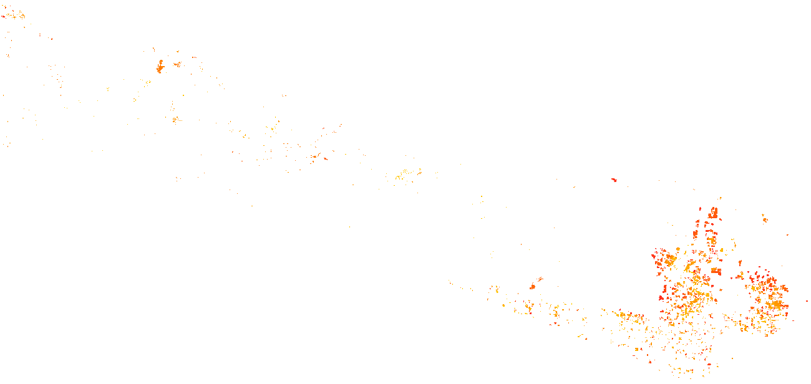

Forest Loss · 2001–2025
Cumulative forest disturbance hotspots. Red zones mark priority sites for enforcement, restoration and REDD+ monitoring.
GEE processedOrange/red = forest loss year signal. Background = no detected loss.
N
0 10 km